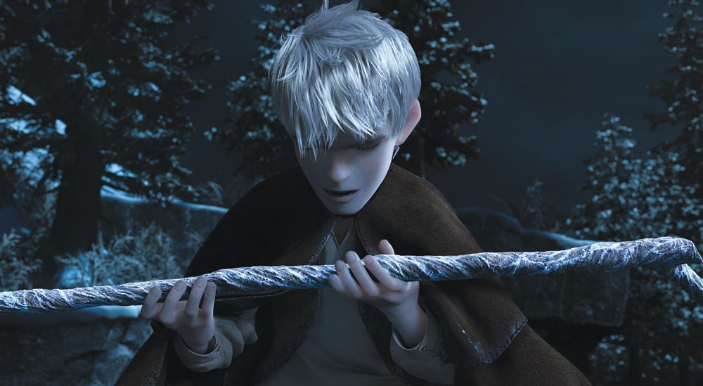

About Jack
Jackson Overland Frost, better known as Jack Frost, is the main protagonist in Rise of the Guardians and an immortal supernatural being much like the Guardians
Jack's characteristics
- Wind
- Storms
- Cold
- Snow

This is Jack with his staff